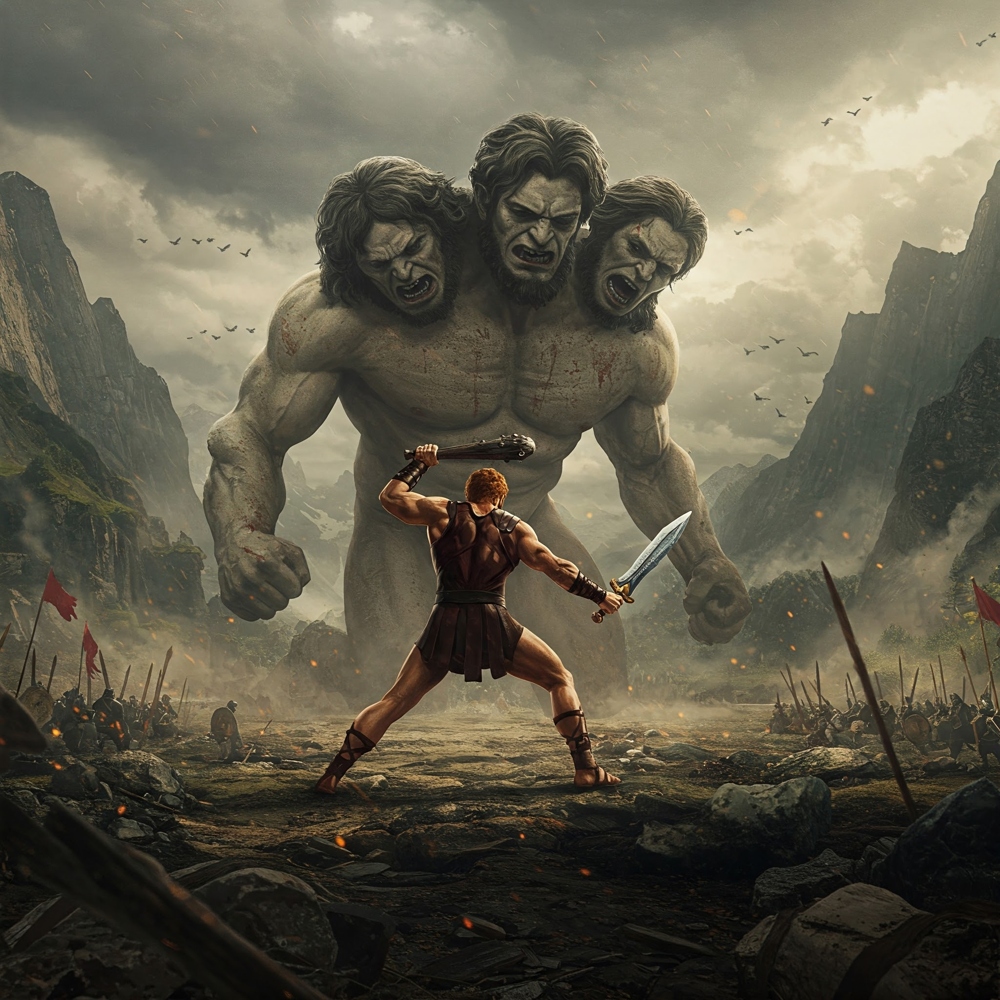

El océano Atlántico hierve bajo un sol de plomo. En la isla de Eriteia, las rocas sangran un líquido rojo y el aire huele a cobre y sudor. Tres colinas se alzan a lo lejos... pero no son colinas. Son los cuerpos entrelazados de Gerión, el gigante de tres cabezas, seis brazos y una sola alma maldita. A sus pies, pastan toros rojos cuyos mugidos hacen temblar la tierra.
"Nadie roba a Gerión y vive", ruge la cabeza izquierda.
"Tu esqueleto adornará mi corral", escupe la derecha.
"...", calla la del centro, observándote con ojos que ven tu pasado y futuro.
